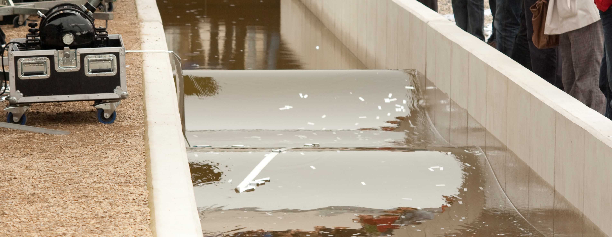

Part II labs¶

The part II labs are associated with 200-level subjects. Emphasis is placed on supervised independent investigation of non-trivial physical phenomena. Topics of investigation include foundational experiments in classical physics through to modern application-based experiments.
Structure¶
Lab work is undertaken as part of subjects KYA211 waves and kinetic theory and KYA212 electromagnetism and thermodynamics which run in semesters one and two respectively. Lab work accounts for 15% and 20% of the subject respectively, with the expectation that three and four labs will be completed in the respective subjects. Three hours of laboratory time is allocated each week during the semester; however, experiments are conducted over a two-week period. Experiments are conducted in collaboration with another student, but the program is designed to foster collaboration and to cultivate a collegiate environment amongst all participants.
Current implementation¶
The text below is taken from the MyLO page for KYA211, but, for the sanity of all involved, it is best to think of the lab program as a separate lab subject that operates in the background of the physics subjects that are currently being run. In short: as part of a physics major, you must complete 3 experiments and complete all assessments.
Semester one, 2023
Experiments are a cornerstone of science, and during your second-year studies, you will undertake a series of experiments which allow one to probe at physical phenomena and hone your ability to employ the scientific method.
Labs are conducted in pairs, and the primary mode of assessment will be your experimental logbook.
All information for the lab program is hosted on the lab website, including the available experiments (and associated documentation), reference material for to aid in the execution of experiments and the preparation of materials to be assessed, along with general content such as FAQs and guides for usage of hardware, software, common coding tasks, and more.
The part II labs are co-ordinated by the subject coordinator, and all enquiries should be directed to the physics lab mailbox.¶
Summary¶
You must complete two experiments for the semester. Each experiment involves the production of a logbook and additionally, at the end of the semester you must deliver an informal presentation based on an experiment of your choice from the semester.
Schedule¶
Lab sessions are scheduled at the following times, with the following demonstrators:
| Laboratory Sessions | Demonstrators |
|---|---|
| Wednesdays 1000 - 1300 | Andy & Simin |
| Fridays 1200 - 1500 | Ian & Earl |
If you have clashes with the above sessions, please contact the Lab Coordinator.
An introductory lab session will be held in week 6 (March 27th - April 2nd) will provide detailed practical information for the lab program, including lab safety, labs practicalities, experimental technique - including logbook preparation - and more.
Labs will run in two blocks of labs, each lasting for three weeks. The dates for semester one, 2023 are as follows:
- Experiment block one: weeks 7, 8, and 9 (April 3rd - April 30th), with logbooks to be submitted to the relevant dropbox by 1700 on the day following your experiment
- Experiment block two: weeks 10, 11, and 12 (May 1st - May 21st), with logbooks to be submitted to the relevant dropbox by 1700 on the day following your experiment
A final session is to be dedicated to scientific communication:
- Week 13: Informal whiteboard presentations, Wednesday May 24th and Friday May 26th Assessment
Assessment¶
The weighting of assessments for this semester is as follows:
- Experiment one (45%)
- Experiment two (45%)
- Scientific communication: presentation (10%)
Experiments¶
Over the course of the two subjects, it is expected that you will complete seven experiments. It is suggested that you pick experiments which interest you, but also across of range of subjects to ensure exposure to diverse content.
| Experiment | Branch(es) of physics | Summary | Difficulty |
|---|---|---|---|
| Adiabatic index of gasses | Kinetic theory | The period of a ball bearing undergoing lightly-damped, forced oscillations due to pressure variations in a gas reservoir is observed as a way to evaluate the adiabatic index of the gas. is a fundamental thermodynamic property of gases that according to theory must take values equal to the ratio of two integers for mono-, di-, and tri-atomic gases. Argon, dry air (O N), and CO are used as examples of the three types. is related to the compressibility, the sound speed, and the heat capacity of a gas. | |
| Electron diffraction | Wave mechanics, Quantum physics | A thin piece of highly-ordered material is considered as a diffraction screen with aperture spacings determined by the atomic spacings in the sample. Observations of the patterns that result when electrons accelerated through several kilovolts hit a chip of graphite can be used to prove that electrons can exhibit wave behaviour in accordance with deBroglie's hypothesis, and to probe the spacing and arrangement of graphite atoms on scales 10 m. | |
| Time-domain reflectometry | Wave mechanics, Electromagnetism | The properties of waveforms travelling through cables with different characteristic impedances are investigated. The behaviour of reflected waves from boundaries of high, low, and matched impedance is observed and related to the wave equation, and the characteristic impedance and speed of pulses in a cable are used to compare the cable inductance and capacitance to theoretically calculated values. | |
| Ultrasonic ranging | Wave mechanics | This experiment looks into some of the problems involved in using ultrasonic sound waves to measure the distance of an object from an ultrasonic transmitter. |
| Experiment | Branch(es) of physics | Summary | Difficulty |
|---|---|---|---|
| Charge-to-mass ration of the electron | Electromagnetism | This experiment uses a kinematic analysis of the helical path followed by electrons deflected by a magnetic field to determine the ratio of the electric charge to the mass . The ratio is determined by measuring the change in magnetic field required to keep an electron beam focused on a CRT screen as a function of different accelerating voltages (also known as Hoag's method). | |
| Entropy change in a rubber band | Thermal physics | The relation between work, temperature, and entropy is explored by testing the amount of work required to stretch a rubber band at different temperatures. | |
| Hysteresis of iron | Electromagnetism | Hysteresis in a physical system arises when the internal state of the system depends on the past history of external forces applied, i.e., the system does not return to its lowest-energy or equilibrium state in the absence of an applied force. This happens during the magnetisation of ferromagnetic material in an external field. In this experiment magnetic hysteresis in iron is explored as a function of the size of the magnetising current, and the energy dissipation due to hysteresis losses is explored. | |
| Induction and the Earth's magnetic field | Electromagnetism | A changing magnetic flux creates a measurable electric current in a loop of wire. One way of creating a change in magnetic flux is by changing the orientation of a coil with respect to a constant magnetic field . In this experiment, the strength and orientation of the Earth's magnetic field is measured by observing the electrical response produced during a rotation of a coil of wire (colloquially known as the -flipper). | |
| The Michelson interferometer | Wave mechanics, optics | The wave nature of light at visible wavelengths is demonstrated by use of a dual-beam interferometer of the sort pioneered by Michelson. By altering the optical path length of one beam relative to the other, interference effects are used to measure the index of refraction of mica and of air over a range of pressures. |
| Experiment | Branch(es) of physics | Summary | Difficulty |
|---|---|---|---|
| Fourier optics | Wave mechanics, Optics | ||
| The Frank-Hertz experiment | Quantum mechanics | ||
| The Mach-Zehnder interferometer | Wave mechanics, Optics | ||
| Holography | Wave mechanics, Optics |
Prior to performing any experiments, it is a requirement that you have completed the lab induction.
Assessment¶
As part of each experiment, you will be expected to maintain an experimental logbook upon which you will be assessed. Log books are to be written during practical sessions, with the expectation that the vast majority - ideally the entirety - of the work will be completed during the allocated classes. Reports are required to be submitted by 1300 the day after your final lab session for a given experiment. Your logbook will be returned prior to your next experiment, and part of your assessment will be based upon how you address your markers comments.
In addition to your logbook, once per semester you will be required to select one of the completed experiments and prepare a formal report and to give a short group presentation.
Information on how to prepare, and what is expected for a log, a report and a presentation can be found in the reference section of POLUS.
Practicalities¶
Labs take place in the part II lab (room 233) in the mathematics and physics building located on the Sandy Bay campus.